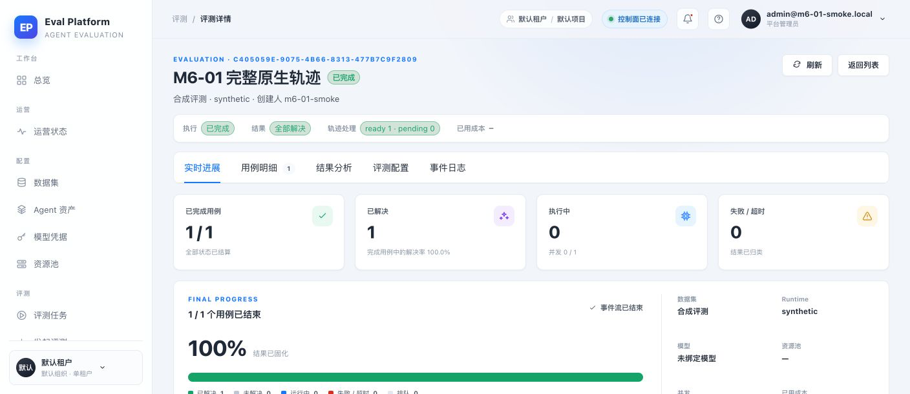
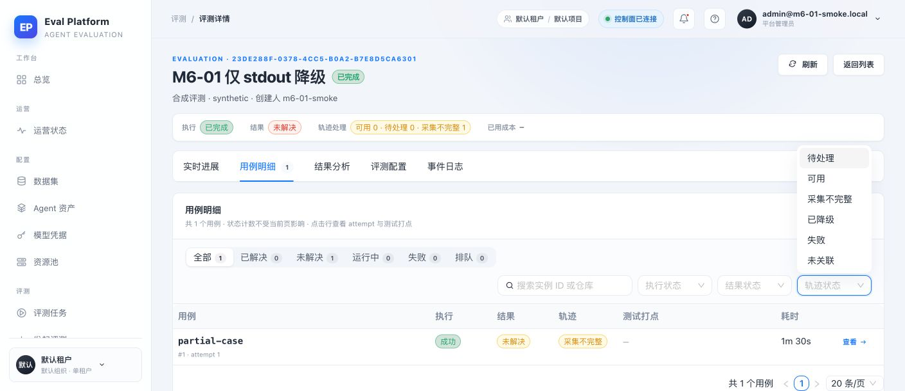

- 应用
- AI Eval Platform · M6-01
- 提交
- 5c93e58（含检视修复）
- 栈
- 本地 FastAPI + SQLite + Chrome dev server
- 数据
- ready 与 incomplete 两组 case attempt
- 缺陷来源
- Computer Use 观察页面状态展示
- 修复范围
- web/src/pages/EvalDetailPage.tsx
- 真实 Claude Code
- 当前环境无 Docker/模型网络，转 #95 验收
Local stack · 真实 FastAPI 回调 / SQLite / Chrome
M6-01 原生轨迹采集与多文件清单 · 集成冒烟报告
在本地开发栈上用真实 FastAPI 回调复测 M6-01：多文件原生轨迹上传与完成回调把 case 标为 ready，页面显示「可用 1」；只用 stdout 的降级轨迹被标为 incomplete，页面显示「采集不完整 1」，用例表与筛选器均为中文状态。首轮冒烟发现的英文原值/漏计问题已修复，本轮复测通过。
535 passed / 1 skipped后端测试
157 passedRunner 测试
4 通过 · 0 失败冒烟场景
1 已修复缺陷
Environment and Artifact
2026-11-11 · AI Eval Platform · M6-01 · PR #127Scenario Matrix
1 warn · 3 pass · 1 manual| # | 场景 | 结果 | 说明 | 证据 |
|---|---|---|---|---|
| 01 | 修复前：完整轨迹详情 | DEFECT | 修复前：多文件上传与完成回调成功后 trace_status=ready，但状态条直接显示英文键「ready」，与页面其余中文标签不一致。 | 01-before-fix-raw-status.png |
| 02 | 完整原生轨迹 → 可用 | PASS | 回调携带主会话、子 Agent 会话、子 Agent .meta.json 与 stderr 四项 trace 对象；case 为 ready，页面统计「可用 1 · 待处理 0」。 | 02-after-fix-ready-status.png |
| 03 | 仅 stdout → 采集不完整 | PASS | 完成回调声明 capture_status=partial 且仅含 trace_diagnostic；后端落 incomplete，页面统计「采集不完整 1」，用例表标签同步为中文。 | 03-after-fix-incomplete-status.png |
| 04 | 轨迹筛选覆盖新状态 | PASS | 轨迹状态下拉包含待处理、可用、采集不完整、已降级、失败、未关联，新增状态可被筛选。 | 03-after-fix-incomplete-status.png |
| 05 | 失败保留 / 重复 digest / 旧契约 | AUTOMATED | 真实 Claude Code 子 Agent 与 Docker 在当前环境不可用；由 fake claude、临时 .claude/projects fixture、重复 digest/非法路径/legacy manifest 的后端与 runner 测试覆盖，真实链路留给 #95。 | — |
Issues and Observations
P2 轨迹状态在详情页显示英文原值且统计漏计新状态轨迹状态在详情页显示英文原值且统计漏计新状态
- Actual
- 详情页显示英文 ready/incomplete，顶部只统计可用/待处理。
- Expected
- 状态以中文展示，并计入 incomplete/degraded 数量与筛选项。
- Root cause
- traceStatusMeta 与统计未覆盖迁移 0019 新增状态。
- Fix
- 补充中文标签、警告色、计数与筛选，复测通过。
Fixed · 5c93e58
Evidence
3 screenshots

Automated Coverage Assessment
4 areas reviewed| 领域 | 覆盖 | 结论 | 建议 |
|---|---|---|---|
Conclusion
通过 · 无未解决缺陷复测后多文件轨迹、降级轨迹与状态筛选均符合预期，页面不再暴露英文状态原值。
- 真实 Claude Code 子 Agent 与真实 OSS 链路留给 #95 端到端验收。
- 剩余自动化覆盖由 runner/backend 测试与 CI 把关。
Evidence captured with Computer Use on the local development stack; no production credentials or private paths are included.